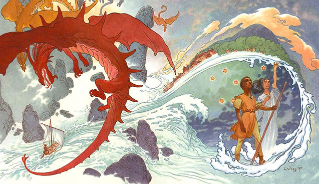

About Ged
Ged is a powerful wizard from Gont, an Island near the East Reach of the world of Earthsea. He has many adventrues all over Segoy's creation from sealing a shadow monster after sailing past the farthest islands of the Achipelago to sealing a tear in the world after crossing the "wall of stones".
Artwork from the Complete Illustrated Edition
Ged's Abilities
- Can call a magewind into the sails of his boat
- Can change into any shape he sees fit
- Can know someone's True name without speaking
Ged's Companions
Ged has had many companions on his journeys through the islands of Eartsea. Click the links to learn more about each of these characters. (* * = character's true name)